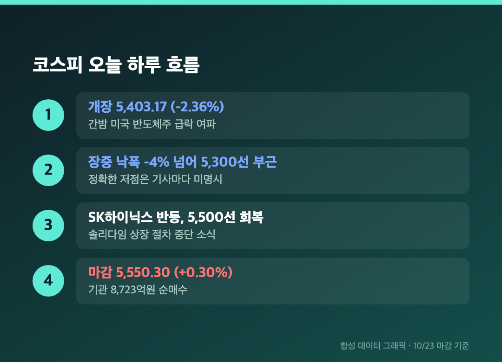
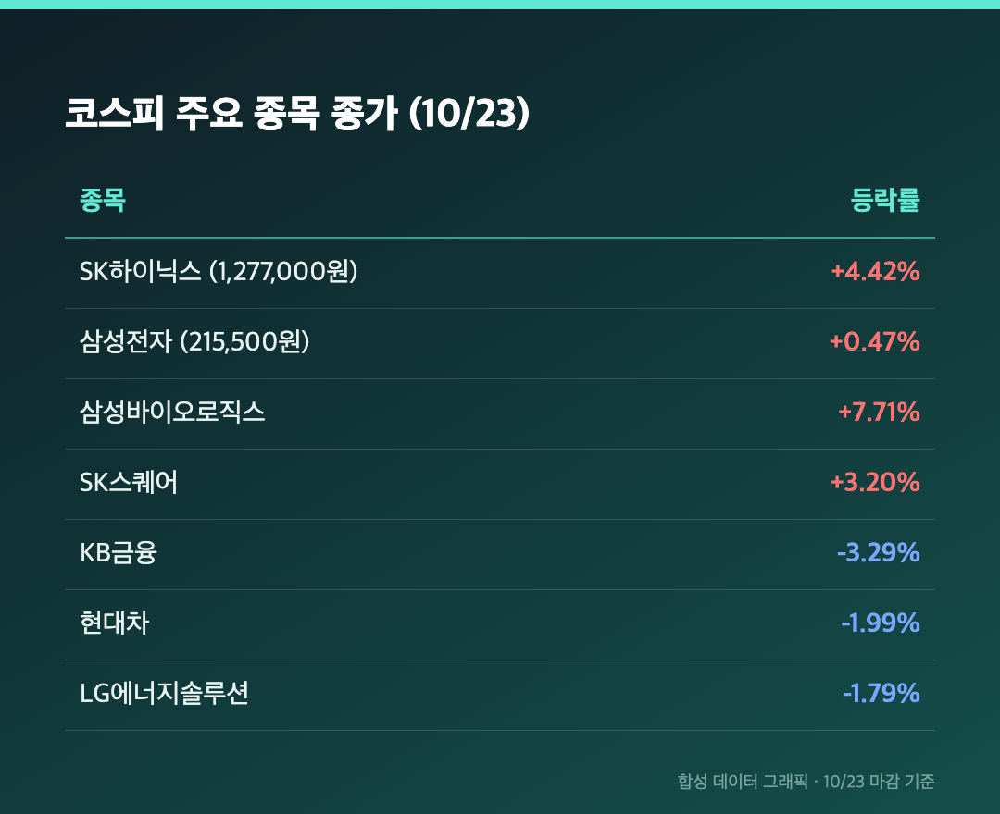
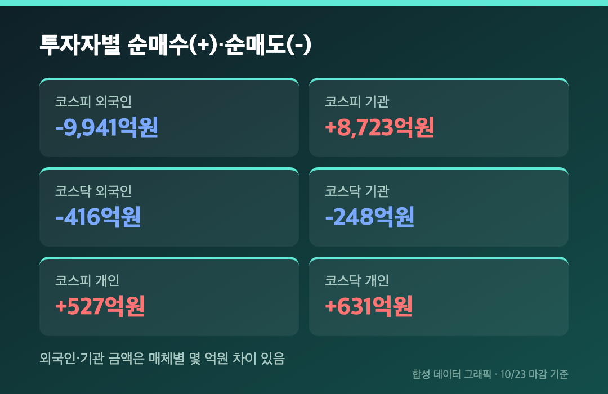
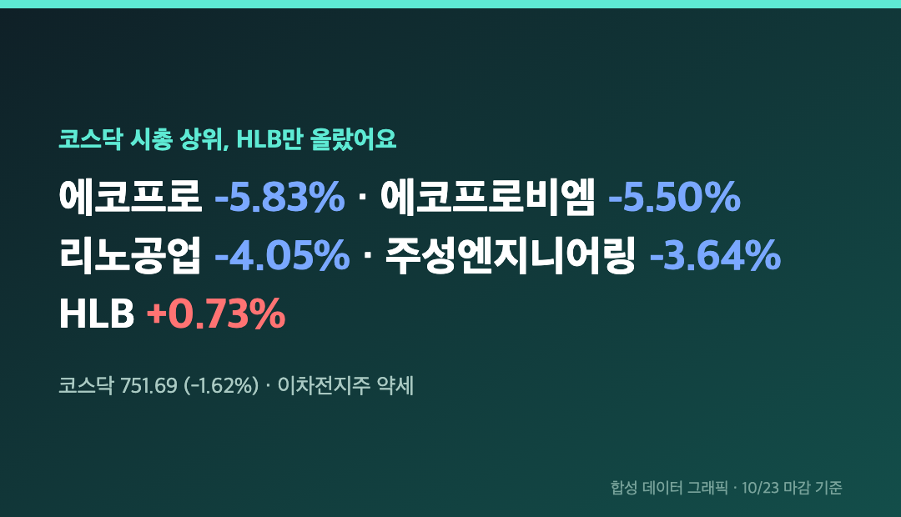

5,300선까지 밀렸던 코스피가 플러스로 끝났어요. 삼성전자 25주를 들고 있는 입장에선 오전에 심장이 먼저 마감하고, 오후에 다시 열린 하루였습니다.
오늘(10/23, 금)은 정상 개장일이었고, 아래 수치는 전부 오늘 마감 기준이에요.
🔄 개장 5,403에서 -4%대까지, 그리고 +0.30% 마감 – 낙폭을 전부 되돌렸어요
코스피 5,550.30 (+16.53포인트, +0.30%) / 코스닥 751.69 (-12.41포인트, -1.62%) |

코스피는 전 거래일보다 2.36% 낮은 5,403.17로 열었고, 장중 낙폭이 4%를 넘었다고 해요. 정확한 저점 숫자는 기사마다 다르게 적혀서 확인하지 못했는데, 5,300선 부근까지 밀렸다는 보도가 있었습니다. 그 자리에서 낙폭을 줄이다가 5,500선을 회복하고 결국 플러스로 끝났어요.
코스닥도 748.32(-2.07%)로 출발해 장중 730선까지 갔다가 750선을 되찾았는데, 코스피처럼 플러스까지는 못 갔습니다. 치킨스탁 집계로는 장중 고저 변동폭이 약 4.4%로, 최근 20거래일 평균의 1.2배쯤이었다고 해요. 종가만 보면 조용한 날인데 장중은 전혀 그렇지 않았던 거죠.
원/달러 환율은 3시 30분 기준 1,324.6원으로, 전 거래일 주간 종가보다 0.4원 올랐습니다.
🧲 SK하이닉스 +4.42% – 솔리다임 상장 중단 소식이 낙폭을 지웠어요
SK하이닉스 1,277,000원 (+4.42%) / 삼성전자 215,500원 (+0.47%) / 삼성바이오로직스 +7.71% |

개장 때 지수를 누른 건 간밤 미국발 소식이었어요. AI 투자 수익성 의구심에 나스닥이 2.60% 내리고 필라델피아 반도체지수는 6% 넘게 빠졌다고 합니다(파이낸셜포스트, 치킨스탁). 반대로 반등의 불씨는 SK하이닉스가 손자회사 솔리다임의 미국 상장 절차, 지분 매각 포함 검토를 중단했다는 소식이었어요. 이중상장으로 지분이 희석될 수 있다는 우려가 있었던 만큼 시장이 좋게 받아들였다는 설명이 많았습니다.
삼성전자는 장중 5% 넘게 빠졌다가 오후에 상승 전환해서 215,500원(+1,000원)으로 마쳤어요. 25주 기준으로는 하루 종일 마음 졸인 대가가 2만 5,000원인 셈입니다. 다만 파이낸셜포스트는 삼성전자 214,500원 보합, SK하이닉스 1,273,000원(+4.09%)으로 달리 적었는데, 글로벌이코노믹과 중앙이코노미가 같은 수치를 쓴 215,500원과 1,277,000원 기준으로 정리했어요.
내린 쪽도 있었습니다. KB금융 -3.29%, 삼성전기 -2.01%, 현대차 -1.99%, LG에너지솔루션 -1.79%였고요. 반도체 대형주 한두 개가 지수를 끌고 간 하루라고 보는 게 솔직한 표현일 것 같아요.
💸 외국인 9,941억 팔고 기관 8,723억 받았어요 – 개인은 527억 소폭 매수
코스피 외국인 -9,941억원 / 기관 +8,723억원 / 개인 +527억원 |

외국인이 거의 1조원을 던졌는데도 지수가 버틴 건 기관이 8,723억원으로 받아냈기 때문이에요. 파이낸셜포스트는 저가 매수세가 기관 중심으로 들어왔다고 설명했습니다. 외국인 순매도는 일부 기사에서 9,934억원으로도 나와 몇 억원 차이가 있지만 큰 그림은 같아요.
코스닥은 반대 그림이었어요. 개인만 631억원 순매수했고 외국인 416억원, 기관 248억원을 같이 팔았습니다. 억 단위 숫자만 놓고 보면 코스피에서 받쳐준 기관이 코스닥에선 팔았다는 점이 눈에 띄어요.
🔋 코스닥은 시총 상위 대부분 약세 – 이차전지와 장비주가 무거웠어요
에코프로 -5.83% / 에코프로비엠 -5.50% / 리노공업 -4.05% / HLB +0.73% |

코스닥 시총 상위에서 오른 건 HLB(+0.73%) 하나뿐이었어요. 주성엔지니어링 -3.64%, 레인보우로보틱스 -3.42%, 알테오젠 -2.81%도 같이 내렸고, 이차전지주 약세가 특히 두드러졌습니다. 중앙이코노미는 코스닥이 회복하지 못하면서 대형주와 중소형주의 온도차가 뚜렷했다고 정리했어요. 기사에서 코스닥 약세의 별도 원인을 따로 짚지는 않았고, 외국인·기관의 계속된 매도와 미국 AI·반도체주 투자심리 약화 정도가 거론됐습니다.
치킨스탁 집계 업종 기준으로는 제약 +2.71%, 건설 +2.04%, 반도체와반도체장비 +1.93%가 올랐고 비철금속이 -3.72%로 약했어요. 업종 분류 기준이 매체마다 달라서 참고용으로만 봐주세요.
마무리하며
코스피 5,550.30(+0.30%), 코스닥 751.69(-1.62%), 환율 1,324.6원. 장중 -4%였던 지수가 +0.30%로 끝났다는 게 오늘의 전부예요.
한국은행이 이번 주 기준금리를 동결하면서도 '추가 인상의 시기와 속도' 문구를 남겨 긴축 기조가 이어진다는 해석이 나왔고, 다음 주 10/29엔 미국 PCE 물가가 대기 중이에요. 마이크로소프트와 삼성전자·SK하이닉스 실적이 AI 수익성 우려를 달래줄지도 머니투데이 헤드라인에서 짚었습니다. 삼성전자 25주는 그대로 둡니다.
5,550.30. 오늘 숫자는 이걸로 충분합니다.